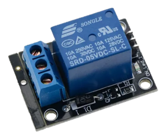
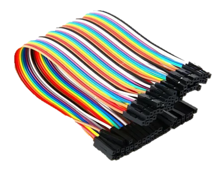
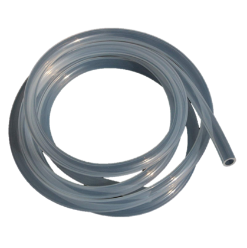
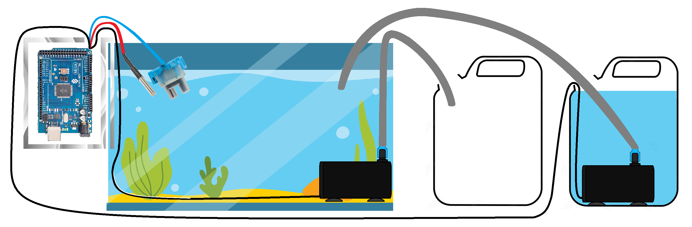

¡ATENCIÓN! Vamos a estar presentándonos en la Expotécnica los días 16 de noviembre de 10hs. a 12hs. - 14hs. a 18hs. y 17 de noviembre de 8hs. a 12hs. - 14hs. a 18 hs. en Alem 285, ¡Los esperamos!
Introducción
Hola! Somos 4 estudiantes de la Escuela de Educación Secundaria Técnica N°2, ubicada la ciudad de Tandil. A través de la realización de éste proyecto buscamos concientizar a la sociedad acerca de la importancia de cuidar correctamente a los peces y demás organismos acuáticos, para que se entienda que no basta con darles comida un par de veces al día, necesitan más cuidados para vivir plenamente. Decidimos crear una solución para eso desde nuestra posición.
El objetivo de este proyecto es, utilizando los medios que nos proporciona la informática, crear un ambiente saludable y sostenible para los organismos que habiten en una pecera doméstica, y proporcionar una experiencia agradable y satisfactoria para el propietario. Los organismos acuáticos, como los peces, las plantas y otros invertebrados, dependen de un ambiente acuático saludable para sobrevivir y prosperar, entonces es ahí donde decidimos interferir, con un sistema al que llamamos provisoriamente HydroTech Solution. Utilizamos Arduino para crear un sistema automatizado que pueda controlar una serie de dispositivos y sensores, pero...
¿Qué es Arduino?
Arduino es una plataforma de hardware y software de código abierto que se utiliza para diseñar y desarrollar proyectos electrónicos interactivos. La plataforma consiste en una placa de circuito impreso que incluye un microcontrolador programable y un conjunto de pines de entrada y salida que permiten la conexión de sensores, actuadores y otros componentes electrónicos. Además, existen diferentes variantes de la placa Arduino, como Arduino UNO, Leonardo, NANO y MEGA 2560, cada una con diferentes especificaciones y características, lo que permite a los usuarios seleccionar la placa adecuada para su proyecto. Aunque Arduino tiene su propio lenguaje de programación, está basado en el lenguaje C++.
Entonces, ¿Cuál Arduino usaremos?
El Arduino Uno es una placa de desarrollo para proyectos pequeños que no requieren una gran cantidad de entradas/salidas, motivo por el cual no es conveniente para nosotros implementarlo, ya que requerimos una gran cantidad de pines. El Arduino MEGA, en cambio, es una placa de desarrollo versátil y poderosa que ofrece una gran cantidad de pines de entrada/salida, memoria y potencia de procesamiento. Es ideal para proyectos más grandes y complejos que requieren una gran cantidad de entradas/salidas o que necesitan procesar una gran cantidad de datos. Aunque es más caro que otras placas de desarrollo de Arduino, la capacidad adicional que ofrece lo convierte en una opción popular para proyectos avanzados, como el nuestro. Como conclusión final podemos decir que el Arduino MEGA 2560 es la solución ideal cuando un Arduino UNO se queda pequeño en un proyecto, el cuál se puede apreciar en una imágen más arriba.
¿Que elementos utilizaremos?
Los sensores son componentes clave en cualquier sistema electrónico y son particularmente importantes en los proyectos de Arduino. Estos dispositivos pueden detectar cambios en el entorno, como la luz, la temperatura, el sonido, la humedad, la presión y el movimiento, y proporcionar información útil para controlar otros componentes. Pero no son los únicos elementos significativos que vamos a utilizar, a continuación detallaremos cada elemento con su utilidad.
Sensor de temperatura sumergible
El sensor de temperatura DS18B20 es uno de los sensores más versátiles que se pueden encontrar en el mercado. Gracias a su punta de acero inoxidable, es capaz de medir la temperatura en ambientes húmedos y en líquidos, como en este caso, que va desde los -55ºC hasta los 125ºC.
A continuación, podrán ver una animación que demuestra su funcionamiento
Como podemos ver, tanto en contacto con el aire como en contacto con el agua, lee los valores de temperatura desde la punta de acero inoxidable.
Sensor de Turbidez
Los sensores de turbidez miden los niveles de calidad del agua al registrar los niveles de pureza. Utilizan luz infrarroja para detectar las diferentes partículas suspendidas en el agua al medir las tasas de dispersión y transmitancia, las cuales cambian con las diferentes cantidades totales de sólidos suspendidos (TSS) en el agua. El factor TTS incrementará si éstos aumentan en el líquido.
Como mostramos anteriormente, tenemos otra animación para demuestrar su funcionamiento
La punta de plástico detecta los niveles de pureza al entrar en contacto con el agua. La lectura es muy irregular y no tiene una unidad de medida exacta cono los grados celsius, debido a ciertas calibraciones en el código. Para entender la lectura de manera simple, es más alta cuando el agua está limpia, y disminuye cuando el agua está turbia.
Bomba de agua sumergible
Es un dispositivo electromecánico totalmente sumergible que utilizaremos para crear un sistema de flujo de agua bidireccional, que reemplace el agua cuando cumpla una condición de impureza, como temperatura muy alta o que esté muy sucia, e inserte nuevo contenido con agua limpia. Cabe aclarar que utilizaremos uno por cada operación, entrada y salida.
Ésta animación ilustra de mejor manera lo explicado
Del lado izquierdo vemos el repiciente con agua limpia y una bomba dentro lista para renovar el agua de la pecera a través de un conducto, a la derecha, dentro de la pecera, otra bomba que servirá para sustraer el agua a un recipiente vacío.
Relé
Es un pequeño dispositivo electromagnético. Funciona como un interruptor controlado por un circuito eléctrico en el que, por medio de una bobina y un electroimán, se acciona un juego de uno o varios contactos que permiten abrir o cerrar otros circuitos eléctricos independientes. Lo utilizaremos como suplemento para el sistema de bombas.
Cables
El tipo de cable que utilizaremos contiene distintas clases de conectores incorporados, denominados resumidamente como “macho”, “hembra” y “macho-hembra”, que utilizaremos para realizar las conexiones entre los módulos principales, como el Arduino y los sensores.
Tubo PVC
El PVC, ampliamente conocido como policloruro de vinilo, es un material formado a partir de la combinación química de carbono, hidrógeno y cloro. Lo acoplaremos a las bombas para hacer posible el flujo del agua.
Simulación del prototipo
A continuación presentaremos un prototipo, creado con el programa simulador “Fritzing”, de la conexión de sensores para nuestro sistema de cuidado de peceras que permite la medición en tiempo real de los parámetros críticos del agua, que incluye los sensores de temperatura y turbidez.
Como se puede observar, es un prototipo bastante simple y previo a la obtención de los elementos físicos, con los elementos que teníamos planeado utilizar hasta ese momento, sin embargo, nos ayudó a adelantar el diseño, lo que nos ahorró algo de tiempo en el momento en que adquirimos los componentes físicos.
A continuación, un esquema de cómo nos gustaría que se viera el producto completo una vez ensamblado.
A la izquierda, tendríamos una caja contenedora con todo el conexionado del Arduino que pueda acoplarse a la pecera, la cual también tendría una abertura para darle paso a sensores y a los cables conectados a las bombas. Las bombas se pueden ver a la derecha, implementadas como se explicó anteriormente
Armado práctico del prototipo
Aquí tomamos algunas fotos de los primeros días que empezamos a interactuar (y experimentar) con el Arduino y demás dispositivos ya adquiridos.
Primera puesta en práctica
Éstas imágenes muestran la primera puesta en práctica del sistema completo, mostrada durante la feria IT.

Diagramas
En ésta sección hay una serie de diagramas para visualizar el sistema desde diferentes perspectivas, haga click en uno de los botones para verlos.
Éste diagrama muestra de manera simple el funcionamiento del sistema, al iniciar, se toman las lecturas de ambos sensores, si el valor de temperatura es muy alto o bajo, o el valor de turbidez es muy alto, se activará el ciclo de reemplazo de agua, caso contrario, con un segundo de diferenca, los datos se vuelven a leer.

Éste diagrama muestra las acciones más significativas que pueden realizar los principales sujetos asociados al manenimiento de una pecera. Los dos sujetos principales son el usuario (dueño de la pecera) y el administrador, ambos pueden tanto iniciar como cerrar sesión en una hipotética aplicación. El usuario realiza el mantenimiento de su pecera, de manera preventiva, puede solicitarle suministros de cuidado a un proveedor como lo puede ser una veterinaria; de manera correctiva, puede medir los parámetros del agua utilizando nuestro sistema, si éstos sobrepasan tal umbral, se activará automáticamente el ciclo de reemplazo de agua, al mismo tiempo que, tanto el usuario como el administrador, recibirán una notificación al respecto. Por último, el administrador tendría acceso y control remoto del sistema, lo que le permite ejecutar acciones adicionaless, como activar y controlar el ciclo de reemplazo de agua en cualquier momento.

Éste diagrama muestra un esquema general de la estructura del sistema. El "núcleo" del sistema se encuentra en la pecera, junto con los seres que en ella habitan; a la pecera se le asocia el mantenimiento, tanto preventivo como correctivo; el mantenimiento está ligado directamente con el sistema de cuidado; el sistema de cuidado se vincularía al usuario a través de una hipotética aplicación, la cual le enviaría notificaciones basadas en las estadísticas que arrojen las lecturas de los sensores de temperatura y turbidez, sensores que están directa y físicamente relacionados a la pecera.
Gracias por visitar nuestro sitio! Si le interesa saber más, puede descargar la documentación completa en éste enlace, mientras tanto, seguiremos actualizando la página con más información, te dejamos un enlace a un formulario para que nos envíes tus opiniones o preguntas, hasta la próxima!
© Todos los derechos reservados a Bienestar Acuático S.A.
Contacto: 2494217873 E-mail: bienestaracuatico19@gmail.com